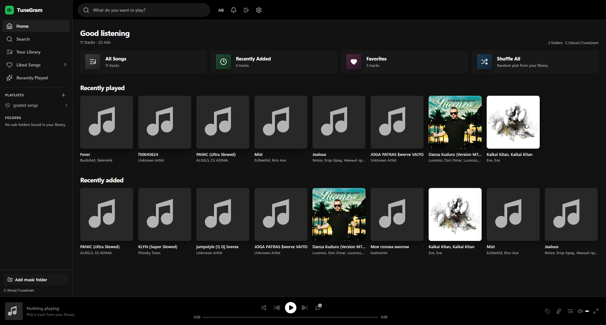
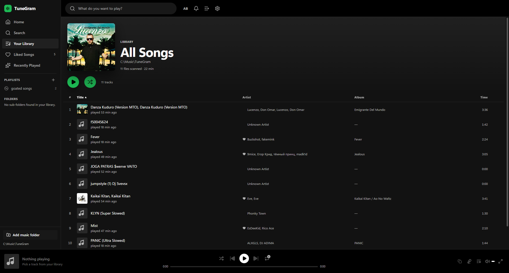

Your downloads, beautifully played.
TuneGram turns every file you've ever saved into a Spotify-grade library — any format, silky playback, and a plugin system built for people who like to tinker.
Free · Windows 10 & 11 (64-bit) · No account, no telemetry

Built for hoarders of good music
Every feature exists because a scattered Downloads folder deserves better.
Plays anything
mp3, flac, m4a, wma, opus — if it ever ended up on your disk, TuneGram plays it. Unsupported formats are transcoded in the background.
A proper desktop player
Persistent mini-player, queue, playlists, search, and media-key control. Local files don't have to feel local.
Plugin & theme ready
A Spicetify-inspired layer: drop in a JavaScript plugin or a CSS theme and it loads on the next launch, no rebuild required.
Point it at a folder
Add a music folder or drag files straight onto the window. TuneGram reads tags and artwork, then keeps the index in sync as you add and remove files.
Completely local
No sign-in, no streaming backend, no analytics. Your library never leaves your machine — the app has no network features at all.
Fast on big folders
Metadata and artwork are cached on first scan, so reopening a library of tens of thousands of tracks is instant.
One player, your whole archive
Sort, filter and search everything you've collected.

Stop fighting your Downloads folder.
Free, local, and yours to customize.
Download TuneGramPortable installer · No admin rights needed · Unsigned, so Windows SmartScreen may warn on first run.